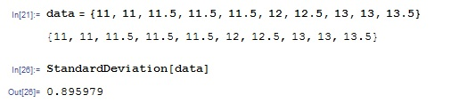

Varians
Definisjon (Populasjonsvarians/population variance):
Pass på at x̄²̄(kvadratisk snitt) ≠ x̄²(gjennomsnitt/mean)
Populasjonsvarians beregning:
1. Lag data som
In[1]:= data={x1,x2,x3...xn}
får utOut[1]= {x1,x2,x3...xn}
2.Skriv som innputt
In[2]:= (data - Mean[data]).Conjugate[data - Mean[data]]/(Length[data])
får utOut[2]= populasjonsvarians verdi
Eksempel:
Definisjon (Utvalgsvarians/sample variance):
Utvalgsvarians beregning:
1. Lag liste
In[1]:= list={x1,x2,x3...xn}
får utOut[1]= {x1,x2,x3...xn}
2. For å finne utvalsvarians skriv
In[2]:= Variance[list]
Eksempel:
Avvik
Definisjon (Populasjonsstandardavvik/population standard deviation):
1. Lag data som
In[1]:= data={x1,x2,x3...xn}
2.For å finne p.s.avvik skriv
In[1]:= Sqrt[(data - Mean[data]).Conjugate[data - Mean[data]]/(Length[data])]
Eksempel:
Vi tar samme data
Definisjon (Utvalgsstandardavvik/sample standard deviation):
1. Lag data som
In[1]:= data={x1,x2,x3...xn}
2.For å finne s.s.avvik skriv
In[1]:= StandardDeviation[data]
Eksempel:
(med samme data)

Kovarians, korrelasjon
Definisjon (Populasjonskovariansen/population covariance, utvalgskovarians/sample covariance, korrelasjon/correlation):
Beregning i Mathematica:
1. Lag data som
In[1]:= data=x={x1,x2,x3...xn}
y={y1,y2,y3...yn}
2.Får å finne populasjonskovariansen skriv
In[3]:= Mean[x*y] - {Mean[x]*Mean[y]}
3. Utvalgskovariansen
In[4]= Covariance[x, y]
4. Du kan gjøre om brøk til desimaltall (Numerical value) ved å taste
In[5]= N[brøk]
5.
In[5]= Correlation[x, y]
N.B. Husk at correlation coeffecient er ca samme for både populasjonskovariansen og utvalskovariansen. Altso de 4-5 første desimaler i Pxy(populasjonskovariansen) er like med r xy(utvalskovariansen)
. Eksempel: